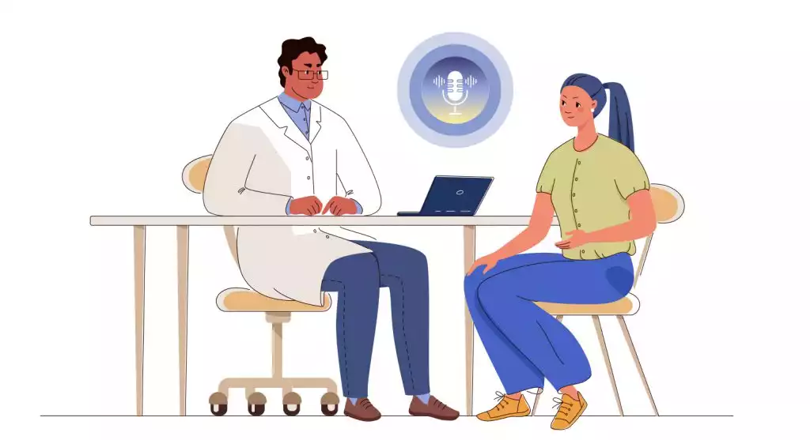

AI Scribes in Canadian Healthcare

Introduction
Healthcare workers in Canada have high workloads and are facing burnout. A 2021 survey run by the Canadian Medical Association found that 53% of 4,121 respondants (phycisians, medical residents, and medical students) reported symptoms of burnout.
Administrative tasks particularly maintaining electronic health care records (EHRs), are a main contributor to the high workload of healthcare workers. EHRs are “a longitudinal electronic record of patient health information [such as patient demographics, progress notes, problems, medications, vital signs, past medical history, immunizations, laboratory data, and radiology reports,] generated by one or more encounters in any care delivery setting” (Menachemi & Collum, 2011. p. 48). Family physicians are particularly impacted by a high administrative workload. The same 2021 survey run by the Canadian Medical Association found that family physicians are significantly more likely (61%) to spend an “excessive” or “moderately high” amount of time on EHRs compared to other types of physicians. This is especially concerning because family physicians are the backbone of primary care – the first-contact, accessible, continuous, comprehensive, and coordinated person-focused care (World Health Organization).
In recent years, artificial intelligence (AI) technology, in the form of AI scribes, has been developing and has the potential to alleviate the administrative workload of family physicians.
So What Are AI Scribes and Their Benefits?
You may be familiar with using speech-to-text technology, AI scribes are similar!
Some physicians tend to dictate their medical notes to have them typed up later. Instead of the doctor, medical office assistant, or medical scribe typing up the notes later, an AI scribe will automate this process and convert voice notes into typed notes in real-time.
Additionally, AI scribes can utilize natural language processing (NLP), which is a type of machine learning that allows computers to understand the meaning behind human language. This allows for the AI scribe to be used during patient-physician interactions/appointments, identifying and recording the important points of the conversation that should be included in EHRs (Tali AI).
As you may imagine, the use of AI scribes can reduce the administrative burden on family physicians can allow them to focus more of their time on patient care, which can have downstream benefits. For example, family physicians may have time to see more patients, which can alleviate emergency department workloads and reduce wait times. Notably, the Canadian Institute for Health Information found that 1 in 7 visits to Canadian emergency departments between April 2023 and March 2024 could have been addressed with primary care. Additionally, they can reduce family physician burnout, and improve job satisfaction, which can lead to better physician retention rates.
Limitations of Implementation
The adoption of AI scribes in Canadian healthcare comes with notable limitations that institutions must consider.
One of the primary challenges is the initial cost of setting up and training healthcare workers on how to use these systems. Some institutions or family medicine practices may prefer to use the time and funds elsewhere. Additionally, many AI scribe services operate on a subscription model (Tali AI), which can be undesireable.
Another critical concern is data privacy and patient skepticism. AI scribes process sensitive patient information, making robust security measures essential to maintain confidentiality and comply with regulations. However, despite these safeguards, some patients may feel uncomfortable with the idea of a computer “listening” to their private conversations during appointments. Similarly, healthcare providers may be hesitant to adopt AI scribes due to concerns about data security or a lack of familiarity with the system.
Physician unfamiliarity with AI scribes also poses a challenge. While these tools aim to save time, some physicians may find the process of editing AI-generated notes to match their preferred style more time consuming than writing notes from scratch. This learning curve can create initial resistance to adoption. Adequate training and support will be essential to help physicians adapt to the technology, as well as developing the AI scribes to adapt to a familiar style of notes.
Conclusion
AI scribes offer a promising way to reduce administrative workloads for Canadian healthcare workers, particularly family physicians. By alleviating these tasks, AI scribes could help reduce burnout and improve job satisfaction, leading to better retention rates among family doctors. Additionally, with more time available for patient care, family physicians could see more patients, helping to prevent unnecessary emergency department visits and reducing emergency room wait times.
However, the successful integration of AI scribes requires addressing several challenges, including financial constraints, data privacy concerns, and the need for user adoption among healthcare professionals.
With the widespread adoption of electronic health records across Canada, AI scribes present an exciting opportunity for further innovation in data science. By facilitating the generation of such rich data, these systems create a valuable resource that can drive the development of new data science applications, further optimizing healthcare systems and enhancing patient care.
References
Canadian Medical Association. (n.d.). Digital Library. Retrieved January 16, 2025, from https://digitallibrary.cma.ca/link/digitallibrary17
Canadian Institute for Health Information. (n.d.). 1 in 7 visits to the emergency department are for conditions that could potentially have been avoided. Retrieved January 16, 2025, from https://www.cihi.ca/en/news/1-in-7-visits-to-the-emergency-department-are-for-conditions-that-could-potentially-have-been
CBC News. (2024, November 30). Why family doctors across Canada are turning to AI scribes — and what it means for patients. Retrieved January 16, 2025, from https://www.cbc.ca/news/health/ai-scribe-second-opinion-1.7390574
Menachemi, N., & Collum, T. H. (2011). Benefits and drawbacks of electronic health record systems. Risk Management and Healthcare Policy, 4, 47–55. https://doi.org/10.2147/RMHP.S12985
Personal conversation with the author’s family physician.
World Health Organization. (n.d.). Primary care. Retrieved January 16, 2025, from https://www.who.int/teams/integrated-health-services/clinical-services-and-systems/primary-care#:~:text=Primary%20care%20is%20a%20 model,have%20equal%20access%20to%20services
Tali AI. (n.d.). Retrieved January 18, 2025, from https://tali.ai